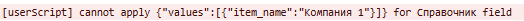

Внутренний вебинар по скриптам, серверным скриптам и ботам
Скрипты
Скрипты нужны для автоматических операций в процессе заполнения задачи пользователями. Скрипт имеет следующую структуру:
form - нужен всегда.
onChange - функция, которая вызывается в момент изменения поля, коды или названия которых переданы в качестве её аргументов. Если передан параметр true, то скрипт отрабатывает при открытии страницы. Если пользователь сохраняет значение, страница обновляется и все скрипты с параметром true отрабатывают
Функция - некоторые функции существуют в двух версиях: обычной и асинхронной. Асинхронную функцию мы используем, если внутри надо сделать какой-то запрос: к реестру или справочнику. Все функции подробнее описаны далее.
Итого скрипт выглядит так:
form.Onchange(["НазваниеПоля1", "КодПоля2", ...], true).<функция>(<параметры функции>, state=>{<исполняемый код>})
Скрипт имеет лимит на исполнение в 5 секунд.
Какими данными оперирует скрипт
Скрипт оперирует данными, которые хранятся в параметре state. В нём есть:
changes - массив полей, которые были переданы в onChange. Каждое поле приходит со своими атрибутами. Подробнее ниже
commenter - пользователь, от лица которого действуем. О нём скрипты знают:
Имя
Фамилию
Локацию - из профиля
Id организации
Название организации
id пользователя
номер телефона
остаток дней отпуска
роли, в которые входит
currentStep - номер этапа, на котором находится задача (при заполнении равно 0)
prev - у заполняющих функций там хранится значение заполняемых полей. У остальных бесполезно
taskId - номер задачи (при заполнении null).
Всеми этими данными можно пользоваться в теле исполняемого кода. Главное, уметь его достать. И тут надо поговорить об особенностях разных типов полей.
Типы полей и их особенности
Типы полей описаны здесь .
Текст
Основной атрибут значения - text. Единственное поле, которое вызывает все свои скрипты в процессе заполнения. То есть каждая буква - вызов.
Заполняется простой передачей строки в return:
return "Это простой текст"
Выбор
Четыре атрибута значения - choice_id, choice_name, choice_ids, choice_names. Если поле является мультивыбором, то в первых двух передаётся последнее значение в списке выбранных значений. Рекомендуется всегда использовать данные из choice_names
Заполняется передачей объекта с атрибутом choice_names или choice_ids:
return {choice_names: ["Да", "Нет"]}
Галочка
Основной атрибут checked. При открытии задачи, если не заполнено имеет значение '', которое является не логической переменной, а строкой. Но JS всё равно воспринимает пустую строку как false при переводе в логический тип, так что без разницы. А вот при нажатии принимает значения true/false.
Заполняется словами checked/unchecked
return "checked"
Справочник
Если поле пустое, то передаётся null, вообще нет объекта с атрибутами. Если же поле заполнено, то набор атрибутов зависит от типа поля: единственный или множественный выбор.
Если выбор единственный, то передаются атрибуты:
item_id - внутренний номер элемента
columns - словарь из значений колонок выбранного элемента
Что такое словарь и как работать с ним в JS
Словарь это объект, состоящий из пар ключ-значение. В словаре не могут повторяться ключи. Обращение к значению идёт по ключу, заключенному в квадратные скобки. Например, у нас есть справочник с колонкой "Категория". В таком случае, обращаться к значению надо так (представим, что поле справочник вы поместили в переменную catalog_item): catalog_item.columns["Категория"]
Если обратиться к ключу, которого нет в словаре, то получишь undefined.
Если же выбор множественный, то добавляется атрибут values. В нём перечислены все выбранные варианты, а item_id, columns отражают значение для последнего элемента из списка. Values - это массив из объектов с атрибутами item_id, columns.
Заполнение также зависит от того, сколько вариантов можно выбрать в поле. Если выбор единственный, то заполнять можно, используя только item_id или item_name. Item_name - значение в первой колонке элемента.
return {item_id: 2121212}
return {item_name: "Значение в первой колонке"}
Так же можно заполнять и множественное значение. Но лучше использовать values, куда передавать набор вариантов.
return {values: [{item_id: 212121}, {item_id: 122210}]}
Но если попробовать так заполнить поле с единственным выбором, то выдаст ошибку, которую можно увидеть в консоли:

Обратите внимание, что при изменении поля скрипт, у которого поле в onChange, вызовется два раза: при нажатие на поле и при выборе значения
Форма
Передаются атрибуты:
task_id - null, если пустое или номер выбранной задачи.
task_ids - то же самое, только в массиве (всегда массив из одного элемента)
fields - массив смежных полей. Передаётся только если в этот запуск выбиралось значение в поле. Иначе пустой массив. Рекомендуется использовать только, если скрипт должен отработать в момент выбора значения в поле. Иначе используйте fetchRegister (описано далее)
Заполняется объектом с атрибутом task_id:
return {task_id: 1231}
При заполнении имитируется выбор пользователем, поэтому все смежные поля заполнятся в соответствии с настройками поля.
Число и деньги
Основной атрибут value. Если табличное, то есть атрибут sum, представляющий из себя сумму по колонке. Заполняется передачей числа
return 102
Дата
Основной атрибут date. Если его передать в new Date(), то получите объект типа Date с часовым поясом пользователя.
Заполняется передачей объекта с атрибутом date и строкой со значением формата "YYYY-MM-DD"
return {date: "2025-02-28"}
Однако если у вас есть объект Date, то можно использовать метод toISOString()
return {date: new Date().toISOString()}
Время
Передаётся в виде строки формата "HH:MM" в атрибуте time.
Время в базе хранится с нулевой таймзоной и уже вам на фронте вам отображается в часовом поясе пользователя. Отсюда следует вывод, что если нужно производить какие-то вычисления в текстовые поля или сравнения с другими значениями, нужно помнить про часовые пояса. Для получения часового пояса пользователя есть специальная функция о которой далее.
Заполняется объектом с атрибутом time. Значение атрибута должно быть строкой HH:MM, но можно обрезать до H:M, если часы и минуты однозначные. Помните про часовой пояс, если в Москве заполнить 15:00, то в Лондоне будет отображаться 12:00.
return {time: "23:01"}
Телефон
В атрибуте text передаётся весь номер без знаков и пробелов. Заполняется аналогично простым return
return "79165026989"
Эл. Почта
Передаётся в атрибуте value. Заполняется простым return
return test@test.ru
Единственное, на что надо обращать внимание - формат записи. Сама платформа не позволит сохранить некоррректное значение, поэтому перед заполнением лучше проверить, что заносимое значение соответствует маске x@x.x, иначе пользователь окажется заперт: он же не может поправить почту вручную
Контакт
Если поле пустое, то отдаётся Null, как у справочника. Если же заполнено, то передаётся:
id пользователя
мобильный номер
Название департамента - здесь передаётся не полное название департамента вместе со всеми вышестоящими отделами, а только название отдела, в котором числится человек
Имя
Фамилия
Локация
id в мессенджере
id организации
Название организации
Персональный номер
Должность
Остаток отпуска
Рабочий номер
Зелёным отмечены атрибуты, которых нет у state.commenter. Таким образом, если нужно при обработке (например, валидации) записывайте значение комментирующего в отдельное поле и затем читайте свойства из него
Заполняется передачей id, email для заполнения использовать нельзя
return 151514
Файл
Значение поля зависит от того, было ли оно уже заполнено на момент открытия или нет.
У поля есть два атрибута, в которых хранится информация:
files - это файлы, которые есть сейчас в поле. То есть при его изменении оно меняется
values - атрибут существует только если на момент открытия задачи в поле уже были значения. По мере заполнения оно не меняется, обновления в нём вы заметите когда страница обновится. Зато по сравнению с files каждый объект из values имеет много больше характеристик.
При анализе files легко можно понять, какой файл новый, а какой был на момент открытия задачи: у нового id отрицательный и вообще отсутствует атрибут URL. У старого же id это положительное число, а url заполнен.
Если вы прикладываете какое-то поле в качестве новой версии уже существующего файла, то у нового файла будет непустой положительный атрибут existing_id. Важно, что инфу о предыдущей версии можно прочитать в последний раз в этот момент. После сохранения скрипт уже никак не может дотянуться до предыдущей версии, если история заполнения не дублировалась в другое поле.
Заполнить поле скриптами нельзя (и слава богу).
Подпись
Такое же как и поле Файл. Единственное отличие: файл в поле всегда один. Если потом подпись меняется, это отражается как новая версия
Группа
Читать значение нет смысла, оно всегда undefined. Но вот смысл заполнять поле есть: иногда группу нужно делать по умолчанию развёрнутой для одних и свёрнутой для других.
Пример
Например, в задаче на согласование ДС есть группа с характеристиками основного договора. Эта информация нужна бухгалтерам и юристам, но для всех остальных это просто куча лишней информации, которая занимает слишком много места на форме.
В таком случае, нужно:
Сделать группу развёрнутой по умолчанию
Добавить на шаблон скрипт вида:
form.onChange([], true).setValue("open_group", state=>{
if (!state.commenter.role_ids.includes(1411) || state.current_step != 3 )return null;
});В IF надо прописать, какие условия выполняются, чтобы группа свернулась
Таблица и поля в таблице
В самом поле таблицы не хранятся колонки этой таблицы. В атрибуте value хранится массив из объектов с атрибутами:
Id - id ряда. Из-за удалений строк они не всегда идут подряд
GuId - бесполезный для нам атрибут
Соответственно, если в таблице нет рядов, то массив будет пустым.
Если в onChange находится табличное поле, то скрипт запустится для каждой строки отдельно. Если в onChange находятся колонки двух таблиц, то скрипт выполнится для каждой пары строк из таблицы. То если мы берём колонку А из Таблицы 1 (3 строки) и колонку Б из Таблицы 2 (5 строк), то скрипт выполнится 15 раз. Важно: все скрипты выполняются одновременно, а не последовательно.
Табличные поля мало отличаются от внетабличных. Все основные атрибуты остаются. Там передаётся значение, которое находится в ряду. Однако добавляется атрибут rows. В нём содержатся значения во всех рядах таблицы. Также добавляется rowId, по нему можно определить номер строки, для которой выполняется скрипт.
Зачем это нужно с примером
Например, нам надо вывести какой-то лог из таблицы, основанный на данных в ней. Чтобы ускорить скрипт и сэкономить ресурсы имеет смысл выполнять скрипт только для первой строки, а для всех остальных прерываться. Тогда при помощи rowId и Id рядов в значении таблицы определите в какой строке вы сейчас находитесь и прерывайтесь для всех, кроме первой. Имейте в виду, что у первой строки rowID может быть и не равный 0, если строки удалялись:
Пример:
form.onChange(['Таблица', 'Текст таблица'], true).validate("Текст таблица", state=> {
const [table, text_table] = state.changes;
let index = table.value && text_table.rows ? table.value.findIndex(x=>x.Id == text_table.rowId) : undefined;
if (index === undefined || index != 0) return;
return {errorMessage: "Плохо"};
});Обратите внимание, что в rows всегда на один элемент больше, чем в таблице. Это "фантомная" следующая строка, которую пользователь ещё не добавил.
Также надо учитывать, что есть одно поле, которое может сломать все алгоритмы: это Справочник. Если в ряду он пустой, то он передаётся в виде объекта null, то есть вообще без атрибутов. Поэтому всегда проверяйте его на существование, если он у вас есть в onChange.
Добавлять, удалять, менять порядок рядов в таблице нельзя скриптом.
Колонки можно заполнять только, если в onChange передать другие колонки этой таблицы. В таком случае заполнится колонка, которая в том же ряду. Если же попробовать заполнить колонку в таблицы без передачи OnChange колонки из таблицы, то заполнится только первая строка (причём она добавится, если её до этого не было). Все остальные строки в этой колонке останутся пустыми.
Пример работы скриптов для таблицы
Допустим, у нас есть таблица с двумя колонками:
Колонка А и Колонка Б. Есть скрипт
form.onChange(["Колонка А"], true).setValue("Колонка Б", state=>{
return state.changes[0]?.value ? state.changes[0].value*1.2 : null;
});В таблице два ряда. В таком случае при открытии страницы или при внесении изменений в одну из строк скрипт запустится два раза и для заполнит две ячейки во втором столбце, взяв за value значение в первой колонке из каждого ряда.
Примечание
Не имеет значения, нельзя заполнить.
Но можно воздействовать на него скриптами валидации или видимости. Этому полю нельзя присвоить код. Но к нему можно обратиться по названию:
Если это просто текст, то в качестве аргумента надо передать весь текст
Если есть Кнопка, то надо передать заголовок кнопки
Открыта/Завершена
Передаётся объект с атрибутом value. В открытой задаче имеет значение false. Заполнять нельзя.
Автор
В отличие поля типа Контакт здесь value это не объект с кучей данных, а только id. Поэтому не рекомендуется использование этого типа, лучше использовать поле Контакт со значением по умолчанию. Заполнять нельзя.
Дата создания
Похоже на поле типа Дата, но вместо атрибута date атрибут value и нельзя заполнять.
Срок
Передаётся объект с атрибутами value и duration_minutes. Оба параметра передаются вне зависимости от выбранного типа срока. В value передаётся объект Date в часовом поясе заполняющего. Если тип срока "Дата", то время в будет равно временем заполнения. Если интервал не настроен, то duration_minutes будет 0.
Заполняется оно при помощи передачи атрибута.... date. Рекомендация: лучше всегда создайте переменную типа Date, поместите туда желаемое значение и затем передайте Date.toISOString()
return {date: new Date().toISOString()}
Если срок с интервалом, то в передаваемый объект также нужно отдать duration_minutes.
Также можно передавать hours_from_create, но лучше использовать значение по умолчанию в настройках поле
Этап
Лучше используйте state.currentStep.
Функции скриптов
Кроме чтения полей на них можно воздействовать при помощи скриптов. У onChange есть несколько методов, основные аспекты которых описаны далее
setValue
Функция заполнения одного поля. В качестве аргумента принимает строку: название или код поля. Правила заполнения для каждого поля подробно описаны выше. Если возвращать null, то в большинстве случаев сделает поле без значения. Чтобы прерваться надо написать пустой return
if (need_to_stop) return;
Блокирует поле для ручного заполнения.
setValues
Очень похож на setValue, но в качестве аргумента принимает массив строк, которые представляют из себя названия или коды полей. Если написать return null , скрипт прервётся, но целевые значения не обнулятся. Если нужно обнулять значения, то надо передавать массив из null.
Блокирует поле для ручного заполнения
setAssignee
Устанавливает ответственного в задаче. Не имеет аргументов, в return нужно передать id пользователя.
setFilter
Ограничивает варианты выбора в поле. В качестве аргумента принимает название или код полей типа Справочник и Форма. Возвращаемые значения зависят от типа поля.
Для справочников нужно возвращать массив из строк, значений первых колонок.
Для полей типа Форма нужно возвращать список фильтров вида:
{
fieldCode: "Название поля",
value: "Значение поля"
}Вместо fieldCode можно передавать fieldName. Value зависит от типа поля, по которому фильтруем.
setStatus
Устанавливает статус в задаче, аргументов не имеет. Так как поле Статус это на самом деле поле типа Выбор, то передаётся значение {choice_name: "Нужный статус"}
В отличие от установки статуса самим пользователем, он меняется не мгновенно, а ждёт сохранения пользователем. Имейте это в виду при разработке дизайна процесса.
setVisibility
Принимает в качестве аргументов массив из названий или кодов полей. Если возвращаете true, показывает поле, если false скрывает.
Не работает на мобильниках, поэтому не рекомендуется использовать эти скрипты. Лучше использовать связку галочек, скриптов setValue и штатных условий видимости
validate
Запрещает сохранение значения, выводит предупреждающее сообщение. В качестве аргумента принимает название/код поля. Если вернуть null, то предупреждения и блокировки не будет. Чтобы выводить сообщение нужно передавать {errorMessage: "Предупреждение"}
Если по процессу не требуется блокировать поле, а только вывести предупреждение, то в дополнение к errorMessage надо передать аргументы:
canSave - можно сохранять, но всё ещё нельзя утвердить
canApprove - можно утвердить
canReject - можно поставить Против
Если не передавать их результате, от все три считаются false
Асинхронные версии
Некоторые из функций выше имеют асинхронную версию. Такие версии нужно использовать, если внутри функции используется запрос (например, к справочнику или реестру). В таком случае запись должна быть такая:
form.onChange([], true).setValueAsync("Поле", async state=>{return null})Не забывайте писать async перед state, иначе скрипт не отработает.
Другие функции и хинты в скриптах
Кроме метода onChange у объекта form есть несколько других методов, которые могут оказаться полезными
fetchRegister и fetchSelfRegister
Это функции запроса реестров. Отличие в том, что у fetchregister первым аргументом идёт номер формы, у fetchSelfRegister сразу идут следующие аргументы:
Фильтры. Пишется как f=>f.fieldEquals. Вместо fieldEquals может быть fieldGreaterThen или fieldLessThen. В него передаются два аргумента: название/код поля и значение. Значение передаётся в формате, как при заполнении поля скриптами setValue или setValues. Если нужно несколько фильтров, то они записываются последовательно. Например, f=>f.fieldLessThen("number_field", 1221).fieldEquals("date_field", {date: new Date().toISOString()}Если же требуется взять все задачи, то нужно написать f=>null
Массив полей - по умолчанию возвращаются просто задачи, без полей. Если нужны поля, то их надо перечислить в этом массиве. Таблицы и табличные поля таким образом получить нельзя.
Опции - здесь можно указать нужны ли только архивные задачи, только активные или указать конкретные задачи: activeOnly, archicedOnly, taskIds
В taskIds нужно передать номера задач
Это функция по умолчанию возвращает Promise. Поэтому запрос реестра нужно выполнять в асинхронной версии скрипта и не забыть поставить await перед запросом:
form.onChange([], true).setValueAsync("Типы заявок", async state=>{
let tasks = await form.fetchSelfRegister(f=>null, ["Поля"], {taskIds: [1515151]})
return {values: [{item_name: "Пожелания"}]};
});В ответ возвращается объект с атрибутом tasks. То есть для того, чтобы прочитать задачи из примера в цикл надо передать tasks.tasks. Если задач нет, то вернётся пустой массив. Каждая задача имеет атрибуты:
task_id
fields
В fields хранятся поля, которые переданы в массиве запроса. Значение поля такое же как если его получать через onChange, кроме пустых значений. Если поле пустое, то все типы полей передадутся как null.
Обратите внимание. Пользователю вернутся только задачи, к которым у него есть доступ.
getCatalog
Это запрос аналогичный fetchRegister. Вместо большого количества аргументов, надо передать только id или название справочника. Лучше всегда передавать id. Результат переносится в отдельную переменную:
let catalogValues = null;
await form.getCatalog(23232).then(items=>catalogValues = items)По умолчанию пользователь имеет доступ к справочникам, которые присутствуют на шаблоне формы или в организации пользователя.
Как неавторизованному пользователю получить доступ к справочнику
Часто клиенты сталкиваются с такой проблемой: у них есть внутренний справочник, который никак не используется пользователями, но хранит какие-то опорные значения для расчётов или за счёт значений в нём происходит валидация полей или фильтрация других справочников. И они добавляют скрипт, который загружает этот справочник и проводит какие-то манипуляции. Но на веб-форме этот скрипт перестаёт работать у пользователей, но продолжает работать у самого пользователя, даже на веб-форме. Почему?
Дело в том, что доступ пользователя к справочнику регулируется его причастностью к организации. Если же форму заполняет внешний пользователь, без авторизации, то ему даются права на загрузку только тех справочников, для которых есть поле на шаблоне формы в разделе "Ввод". Поэтому в таких случаях стоит добавить поле на шаблон формы, ссылающееся на этот справочник и сделать условие видимости Роль = Пустая роль. В этой пустой роли не должно быть пользователей.
В итоге получаете массив элементов справочника, каждый представляет из себя объект с атрибутами item_id и columns.
fetchRoles
Запрос для получения ролей организации. Не принимает никаких аргументов, также требует await перед собой. Возвращает массив ролей организации, представляющих из себя объекты:
role_id - id роли
member_ids - массив из id пользователей, входящих в роль
getDateWithTimezoneOffset
При помощи следующего алгоритма, можно узнать часовой пояс пользователя:
(new Date().getTime() - form.getDateWithTimezoneOffset(now.toISOString()).getTime())/(1000*60*60) Результат - часы, на которые отличается время пользователя от лондонского. Это можно использовать, когда переносите даты или сроки в текстовые или другие поля.
console.log
Очень полезная функция. Выводит в консоль браузера (F12) промежуточные значения скрипта. Если падает скрипт или непонятно, почему он выдаёт такой результат, вставь в код console.log(<Интересующие данные>), куда передай нужную тебе переменную и посмотри промежуточное значение. Также часто бывает, что скрипт просто как будто ничего не делает: ты тестируешь изменение поля, но никакой ошибки нет, но и результата нет. Расставь по коду метки, например console.log("Теперь проверяем значение") и console.log("Дошли до заполнения значения"), и посмотри все ли сообщения отобразились.
Только надо быть осторожным: если выражение в console.log приводит к ошибке (например, берётся атрибут пустого объекта), то скрипт упадёт на этом моменте, а в консоли не появится содержание лога.
В console.log можно передать сколько угодно показаний. Очень полезно, если ты меняешь значения одного объекта и хочешь вести лог этого
console.log("До изменений", variable)
variable = coef*1.2
console.log("После изменений", variable)Делаем код короче
В JS есть возможности записать длинные куски кода в одну строку. Например, нам не надо последовательно проверять существование атрибутов в сложных объектах. Это можно делать при помощи знака вопроса после каждого уровня объекта
Вместо
if (object && object.level1 && object.level1.level2)
Можно написать
if (object?.level1?.level2)
А if/else можно вместить в одну строку:
Вместо
if (level > 10) return 'High'
else return 'Low'Можно написать
return level > 10 ? 'High' : 'Low'
Внеблоковые переменные
Иногда некоторые переменные лучше хранить не внутри функций, а за границами скриптов. Таким образом можно хранить константы или другие значения, которые должны браться единожды за время посещения пользователем страницы. Например, список элементов справочника. Также это позволяет совершить какие-то действия, которые должны быть выполнены только в момент открытия пользователем задачи. Например, сохранить значение поля при открытии. Пример:
let helpVar = "БЛОКИРУЮЩЕЕ СООБЩЕНИЕBLOCK MESSAGE123456789";
const roles_allowed = [12332, 32325, 6565656, 1204371];
form.onChange(["input"], true).validate("input", state => {
const [input] = state.changes;
if (helpVar == "БЛОКИРУЮЩЕЕ СООБЩЕНИЕBLOCK MESSAGE123456789")
helpVar = input.text;
if ((input.text == helpVar || (!Boolean(helpVar) && !Boolean(input.text)))|| state.commenter.role_ids.some(role => roles_allowed.includes(role)))
return null;
return {
errorMessage: 'Вы не входите в список разрешённых ролей.'
};
});Этот скрипт блокирует изменение поля пользователем, который не входит в роль. Но если бы мы написали этот скрипт без использования внеблоковой переменной, то после изменения поля или простого клика на поле, пользователю пришлось бы перезагружать страницу, теряя данные в других полях. Однако, в таком формате пользователь может просто вернуть значение после своих изменений и продолжить работу в задаче
Оптимизация запросов
Иногда в скриптах приходится использовать большие справочники по несколько десятков тысяч элементов. Или запросы к большим реестрам форм, в которых нет возможности сделать фильтрацию. И если используется табличное поле или просто несколько скриптов используют одни и те же данные, возникает проблема TimeOut, когда скрипт просто не успевает отработать за отведённое время. В таком случае, есть возможность его "ускорить", записав запрос во внеблоковую переменную.
let catalog_promise = form.getCatalog(544151);
form.onChange([], true).setValueAsync("Типы заявок", async state=>{
let catalog_items = null;
await catalog_promise.then(items=>catalog_items = items)
return {values: [{item_name: "Пожелания"}]};
});
form.onChange([], true).setValueAsync("Вопросы", async state=>{
let catalog_items = null;
await catalog_promise.then(items=>catalog_items = items)
return {values: [{item_name: "Пожелания"}]};
});В приведённом выше примере каталог 544151 нам нужен в двух скриптах. И если бы мы просто в каждом из них написали запрос await form.getCatalog(544151).then(items=>catalog_items = items) , скрипты отправили бы два независимых запроса на в базу и оба ожидали бы отдельно. Вместо этого, в такой конструкции запрос отправляется один раз. А в обоих скриптах просто ожидается результат этого запроса.
API
Возможности нашего апи можно описать так: с его помощью можно имитировать почти любое действие пользователя, исключение - настройка форм.
Апи позволяет читать и редактировать задачи, анализировать реестры, управлять пользователями, ролями, ставить напоминания и так далее. Подробно про возможности можно прочитать в справке: https://pyrus.com/ru/help/api
Здесь же мы рассмотрим только основные моменты, которые неочевидны из справки
Особенности АПИ
Права бота
Бот это такой же пользователь, поэтому у него свой пул прав. Его возможности ограничены возможностями его профиля, ему нужно выдавать доступы к формам, общеорганизационные права, права на выгрузку реестров.
Реестры без комментариев
При загрузке реестра вы получаете массив из элементов, которые представляют из себя задачи по форме. Но в этих задачах не будет части информации, такой как дата создания и, что самое важное, комментариев. Для получения комментариев нужно делать отдельный запрос к каждой задаче.
Таблицы
Значение таблиц это массив рядов. У каждого ряда есть атрибут cells. Только в этом массиве приходят только заполненные ячейки. Это исправляется нашими шаблонными ботами, но если не использовать их или писать на другом языке, об этом нужно помнить. Также, если ряд пустой, то cells приходит в виде пустого объекта, а не массива без элементов.
Файлы
Работа с файлами также требует дополнительной осторожности. Для помещения файла куда угодно, его сначала надо загрузить посредством метода /files/upload. В ответе придёт guid загруженного файла. И уже этот guid передаётся в комментарии для приложения файла.
Но этот guid можно использовать только один раз. Поэтому если один файл надо поместить в два места, то следует использовать следующий алгоритм:
Сделать запрос на загрузку файла и получить guid
Использовать этот guid в одном месте, получить ответ и найти ID приложенного файла или его URL
Использовать его для добавления файла в уже произвольное количество мест
Справочники
Здесь надо помнить два аспекта:
Если попробуете сэкономить и передать только часть данных, остальная часть удалится. Например, непереданные элементы (для обновления конкретных элементов используйте отдельный метод ) будут удалены, если используется метод полного обновления. Аналогично с колонками справочника
Изменение первой колонки отличается от таковой в веб-интерфейсе. В вебе можно изменить значение первой колонки справочника без изменения item_id элемента. При изменении через апи старый элемент будет удалён, а новый добавлен.
Манипуляции с сотрудниками
Вы можете почти заменить HR ботов в части ведения сотрудников в Pyrus. У пользователя можно изменить все его характеристики, добавить его в роль, даже выдать доп права к формам. Единственное, что сделать не получится: отключить пользователя, только заблокировать
Комментарии после закрытия
Помните, что теперь при комментировании закрытой задачи она не переоткрывается. Поэтому, если хотите чтобы переоткрылась, добавьте параметр action=reopened
Хинты в апи
Пользуйтесь шаблонными ботами
У нас есть шаблонные боты для Python и TypeScript. Используйте их для адресации к полям по кодам, более удобному прочтению комментариев, облегчённой работе с таблицами.
Как строить отчётность
Зачастую для отчётности нам приходится использовать информацию из комментариев для расчётов таких показателей, как среднее время ответа, количество изменений полей, скорость прохождения этапов и тд. Как уже было сказано, реестры приходят без комментариев и для их получения приходится делать отдельные запросы к задачам. Но это радикально снижает скорость работы боты. Поэтому при дизайне процесса рекомендуется делать следующее:
При закрытии задачи поставить бота, который подготовит данные и поместит их в отдельные поля. Комментирование после закрытия происходит без переоткрытия, поэтому здесь беспокоиться на стоит. Если же нужно скрывать от пользователей полученные данные (только убедитесь, что действительно нужно), то эти данные можно помещать в отдельный реестр. Правда, не забудьте добавить алгоритм для занесения повторных данных при переоткрытии, чтобы не создать слишком много дублей
При построении отчёта при загрузке реестра вся нужная информация будет уже в полях, а не в комментариях и дополнительных запросов не понадобится.
Получение реестров по частям
Ограничение на получение реестра - 20 000 задач. Иногда придётся оперировать с реестром большей длины. Есть несколько способов это сделать:
Загрузить реестр задач в файл Excel при помощи Sync. Тогда бот будет работать не с задачами, а с этим файлом без ограничений
Сделать несколько запросов к реестру. Пример на Python:
def get_full_registry(self, form, form_register_request=None):
full_registry = []
last_task_id = 0
try_cnt = 0
while last_task_id is not None and try_cnt < 10:
try:
if not form_register_request:
form_register_request = FormRegisterRequest()
form_register_request.__setattr__('sort', 'id')
form_register_request.__setattr__('item_count', '20000')
if last_task_id > 0:
form_register_request.__setattr__('id', f'gt{last_task_id}')
last_segment = self.bot_client.get_registry(form.id, form_register_request).tasks or []
last_task_id = None
if last_segment and len(last_segment) == 20000:
last_task_id = last_segment[-1].id
full_registry.extend(last_segment)
except Exception:
try_cnt += 1
return full_registry
Массовые изменения через апи
Иногда нам надо загрузить исторические данные в уже существующие задачи. Удобнее всего делать это через апи, так как здесь может помочь ChatGPT, если нужно загрузить информацию из Excel-файла. В таком случае просто напишите нужный код в PyCharm и запустите его. Не забудьте при комментировании задач указать skip_notification - в таком случае у пользователей не всплывут оповещения.